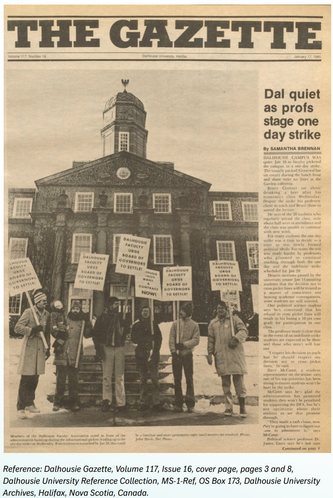

Daily Bulletin, September 4
Have an idea for something to cover?

Dalhousie Student Union Votes to Support DFA
The students have spoken.
In what is one of the most significant demonstrations of support our union has seen since President Brooks and her administration locked us out on August 20, the Dalhousie Student Union council, representing over 20,000 students at Dalhousie, “voted to affirm its support for DFA members, reflecting that the strength of the university community depends on the well-being of both students and faculty.”
Their statement continues,
We are strongly calling for the Board to return to the bargaining table and engage in good faith to reach a fair deal with faculty. Students, faculty, and staff are essential to the functioning of Dalhousie, and decisions that destabilize this community threaten the quality of education and well-being of students.
We, as students, know that an injury to our faculty is an injury to us all. Their fight is our fight, and we proudly stand in solidarity with the DFA.
We cannot imagine a stronger and more supportive message from the students we work with and teach in the classroom every term.
To see our students not only recognize the importance of the work we do as faculty members, librarians, and counsellors, but also to understand the importance of our fight for for a full and fair deal… well, it’s the most moving moment of several I have experienced in the past two weeks.
This statement also also tells us that our honest, transparent, and truthful communications about the needs of our members are resonating with students and the larger community.
So remember, when you walk your picket, or work in one of the Strike HQs, or participate in virtual duties, you are doing more than just a “shift.” You are standing up for your students, and they know it, and they appreciate it, and they want to help. With their support, we can–and we will!–create a better, more fair Dalhousie.
Thank you, DSU colleagues, and thank you students. With your help and support, we will get back to the bargaining table, and then we will get back to a classroom, stronger and more ready than ever.
On Friday, Sept 5th at 12:00 p.m., DFA members will be standing together outside the Killam Library to support precarious workers in our union.
At the rally, precarious workers will speak about their experiences, unique challenges, and the collective power we have to build a better Dalhousie for future academics. While wages are a crucial issue and DFA members are underpaid compared to other U15 schools, precarious workers like early-career scholars and LTAs have unique challenges outside of wages alone. The DFA is fighting for job stability, creative cost-of-living adjustments to match inflation, improved childcare support, and other issues to support our precarious workers.
A note from our colleagues at DalSafe
“Several folks have popped by the security house asking if they are at risk of losing their reserved parking spaces for lack of renewal. The other worry is that they may be ticketed for expired permits. Please take those concerns off the table, No loss of reserved parking and tickets for expired permits.”
They further “anticipate we will get things sorted when we all get back.”
A big thank you to their team for this reassurance!!
47 Years of the DFA: Back to the Future
As we look back over the last two weeks, we remember that our union has nearly a half-century history of action. In 2018, the DFA published 40 Years of Activism: Working for a Better Dalhousieto celebrate our 40th anniversary. As we approach our 50th, and in the midst of our continued struggle, we thought we could have a bit of a “book club” read on the line of that history.
Here are some images of colleagues art different points in our history fighting for our union and for our University (notice any familiar themes…?). Thanks to all of these colleagues who went on strike to build a better Dalhousie!
It’s our time to continue that work now; let’s do them proud.

Shout Outs
A shout out to the fabulous folks (Lisa and Christina (pictured), Saf, and crew!) at Tart & Soul Café on Coburg & Oxford who have been letting DFA picketers use their washrooms and keeping us in caffeine! If you’re down that way, check out their new space and grab a delicious cookie to say thanks!